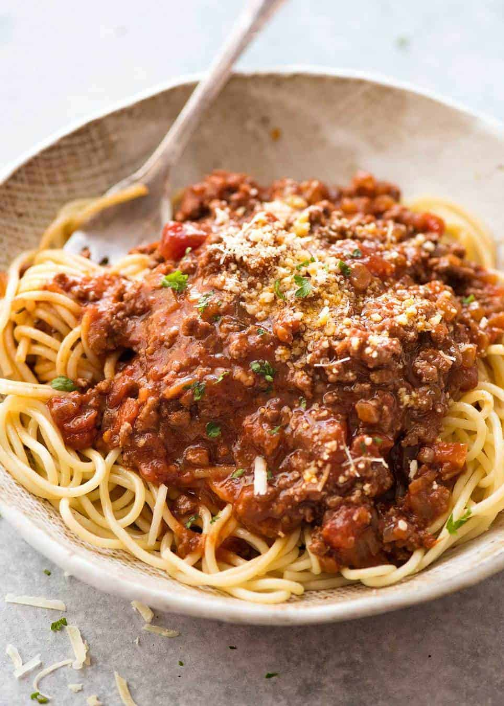
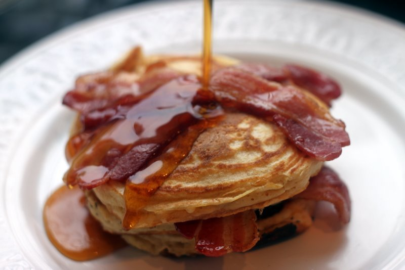
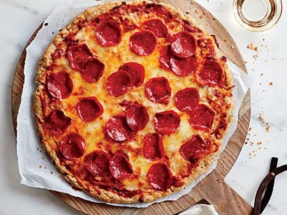

Bobby's Recipe Book
Contents:
Spaghetti Bolognese
- Time: 2 hours, 15 minutes
- Serves: 6
| Ingredients | Quantity |
|---|---|
| Minced Meat | 500g |
| Pasta | 400g |
| Tomato Sauce | 800g |
Step 1: Cook the minced meat along wih the tomato sauce.
Step 2: Boil the pasta.
Step 3: Add the sauce to the pasta and season.
Why you should make it:
- Good for a large group
- Tasty
Source: BBC Good Food
American Breakfast
- Time: 30 mins
- Serves: 1
| Ingredients | Quantity |
|---|---|
| Pancake mix | 200g |
| Maple Syrup | 100g |
| Bacon | 150g |
Step 1: Make the pancakes from the mix.
Step 2: Fry the bacon.
Step 3: Put maple syrup on the bacon and the pancakes.
Why you should make it:
- Easy to make
- Tasty
Source: Eat Like a Girl
Pizza Pepperoni
- Time: 2 hours
- Serves: 6
| Ingredients | Quantity |
|---|---|
| Pizza Dough | 300g |
| Pepperoni | 100g |
| Tomato Sauce | 150g |
Step 1: Form the dough and put the tomato sauce on top.
Step 2: Cut the pepperoni and put them on top.
Step 3: Bake.
Why you should make it:
- Everyone loves pizza
- Tasty
Source: All Recipes